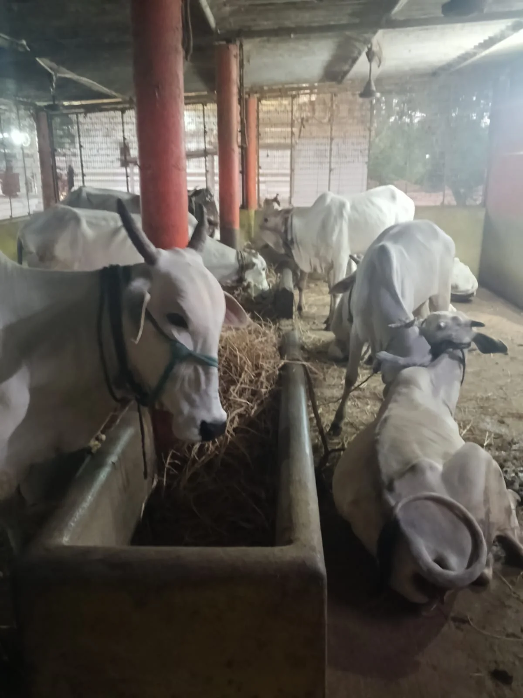
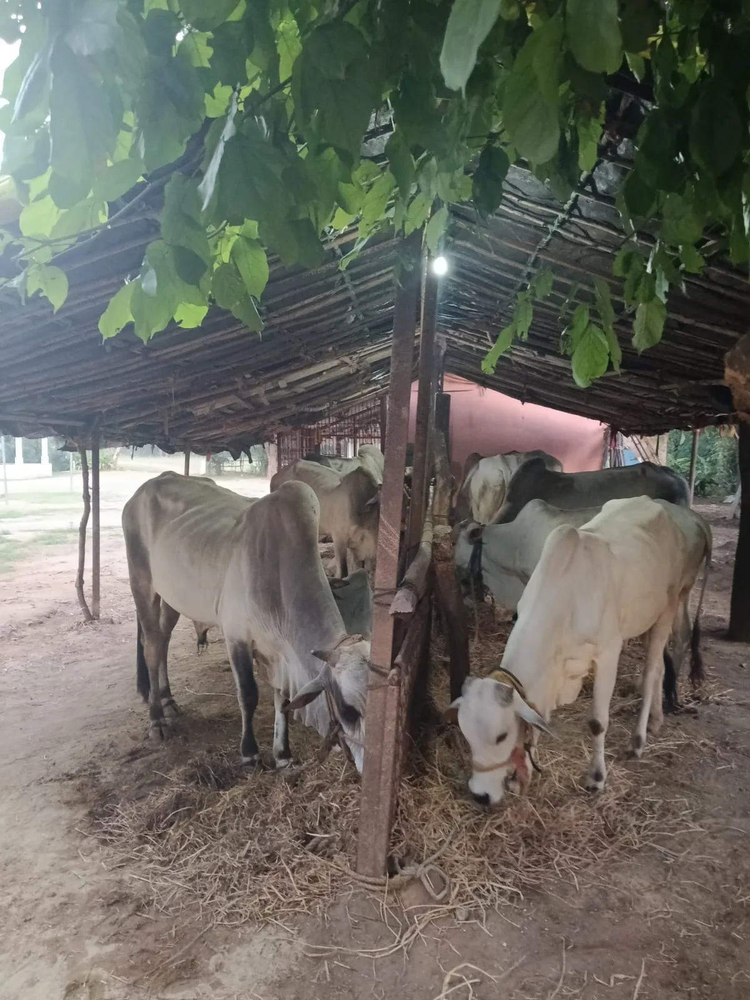
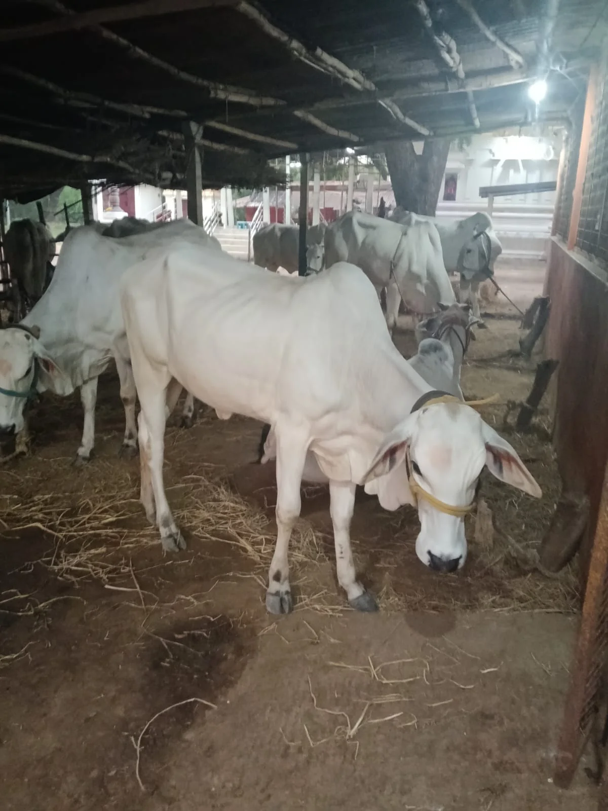
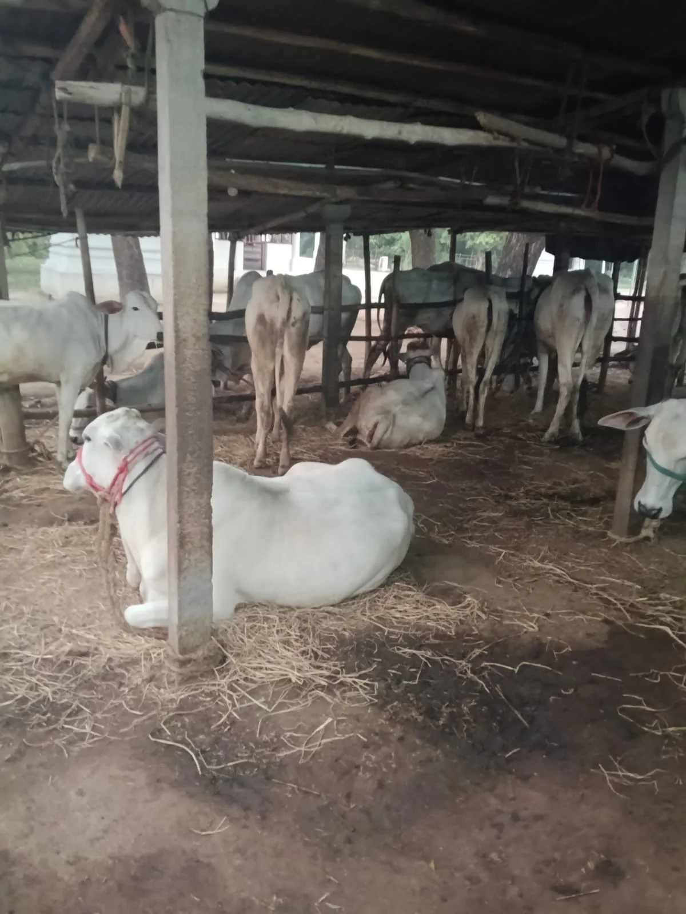
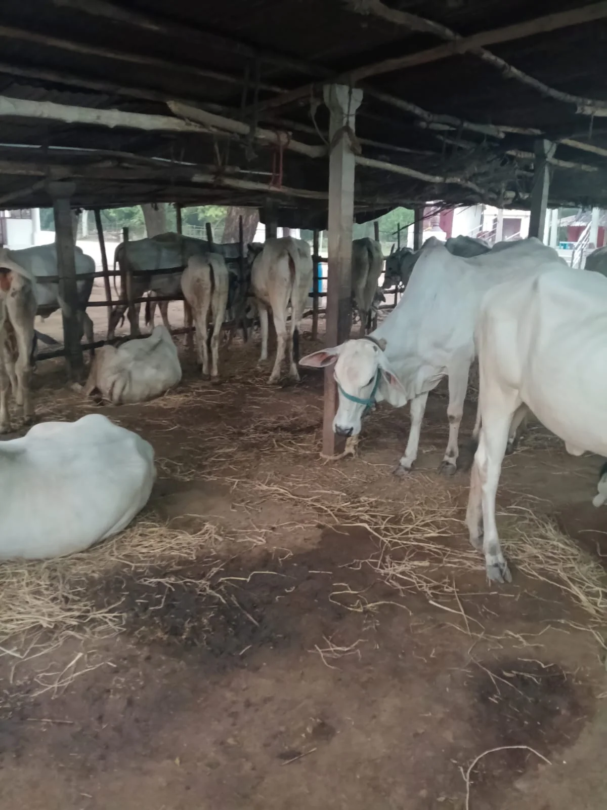

Fill their feeding troughs
Help with fodder and everyday nourishment for the cows in our care. You can also ask about contributing suitable feed directly.
Support fodder & nutritionA full trough. A sheltered place to rest. A little more kindness, every day. Help us care for the 54 cows who call our shelter home.



The heart of our shelter
For us, gau seva means showing up for the lives that depend on us.
At Sri Mahagowri Lalitha Rajarajeshwari Charitable Trust, our cow shelter is home to 54 cows. Their needs are simple, but ongoing: nourishment, fresh water, a sheltered place to rest, and attention to their wellbeing.
We invite you to be part of that care. Whether you contribute to fodder, offer supplies, or help more people discover the shelter, your kindness can make a difference to their everyday lives.
See what your support can help provideWhere kindness becomes care
Help support the essentials that make a shelter a home. Speak with the trust about what is needed most today.

Help with fodder and everyday nourishment for the cows in our care. You can also ask about contributing suitable feed directly.
Support fodder & nutritionSupport health-related needs and veterinary care when needed. Contact the trust to learn about current requirements.
Support their health
Help with shelter upkeep, clean resting spaces and day-to-day essentials, so care extends beyond the feeding trough.
Support shelter careMake room for a little kindness
Caring for 54 cows is an ongoing commitment. Help us meet their needs with a contribution that feels right for you.
Big or small, a thoughtful contribution is a beautiful place to start.
Choose your contribution in Indian rupees.
A glimpse into their world
Step inside our shelter through photographs of the cows and the place they call home.
Photographs and video from our own shelter. Select any photograph for a closer look.
There is more than one way to help
A contribution can be money, materials, time, or a conversation that helps someone else discover our work.
Ask about suitable fodder and other essentials before arranging a delivery, so your contribution meets a current need.
Ask about suppliesInterested in helping at the shelter? Tell us a little about yourself and ask about available ways to lend a hand.
Enquire about volunteeringMeet the cows and learn more about their care. Please contact the trust first to confirm the location and a suitable time.
Arrange a visitKnow the trust behind the care
Sri Mahagowri Lalitha Rajarajeshwari Charitable Trust
We want you to feel informed before you contribute. You are welcome to contact the trust to discuss the shelter’s needs, donation arrangements, and receipt information.
Registration details below are drawn from our NGO DARPAN record dated 31 January 2026.
Speak with the trustFor documents or further information, please contact the trust directly.
A few helpful answers
Have a different question?
We would love to hear from you.
Let’s turn kindness into care